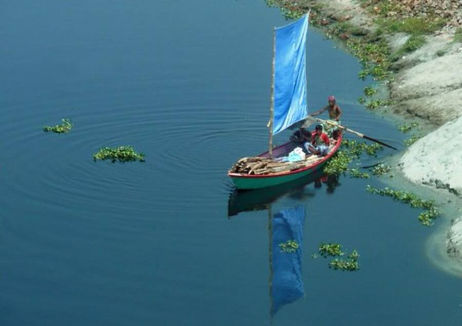
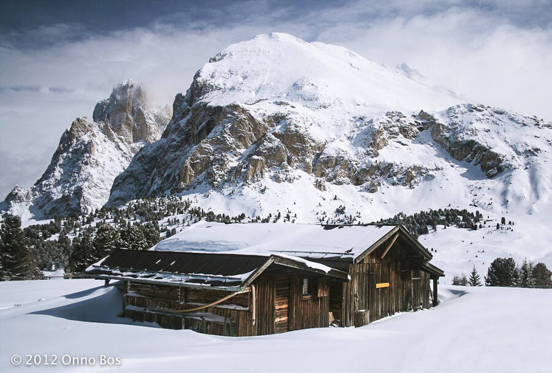
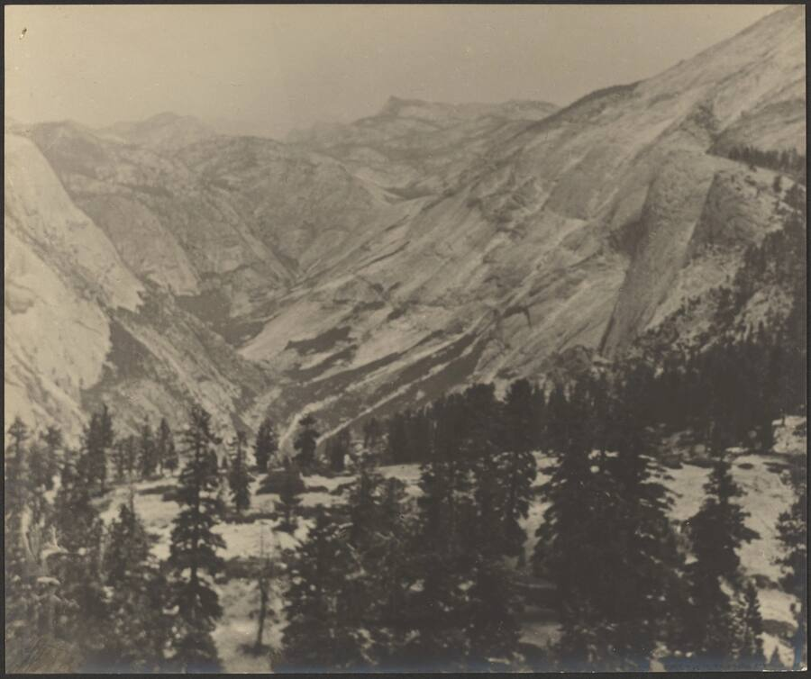
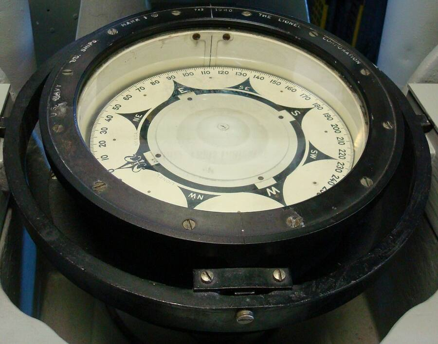
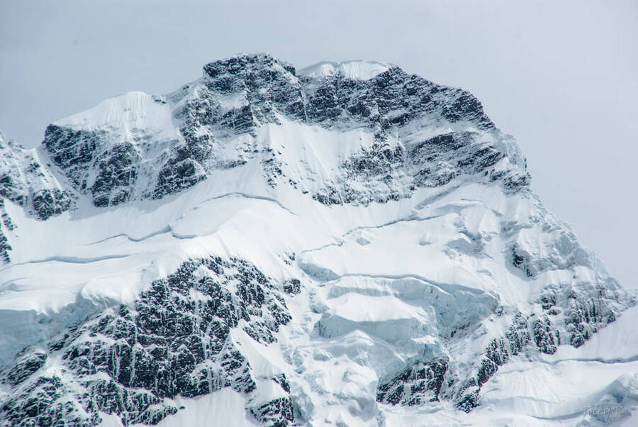

The Atlas Hut
A refuge above the lake, open June to September, reachable by ferry and trail.
A refuge above the lake, open June to September, reachable by ferry and trail.

Ferry — 40 min, 3 daily
Trail — 2 hours, markedOpen June 15 — September 15.
Capacity: 24 bunks.
No electricity. No phone signal.
Can I book ahead?
Yes — by postcard only. We check the box on Tuesdays.
Is there water?
From the spring, 200 metres above. We boil it. You should too.
What if the weather turns?
The hut stays open. The ferry does not. Plan for an extra night.
Dogs?
Yes, but they sleep in the wood room.



Tell us how many, and when. We will write back if there is room.
Write to the hut